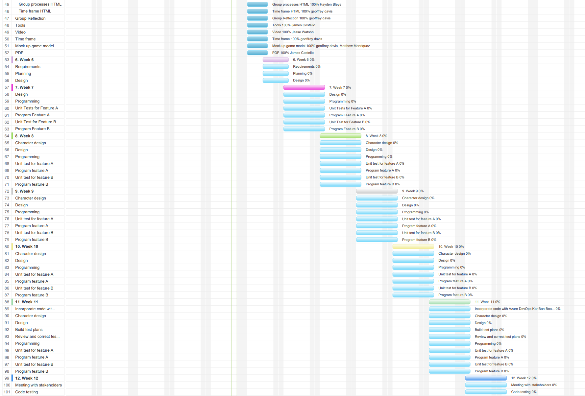
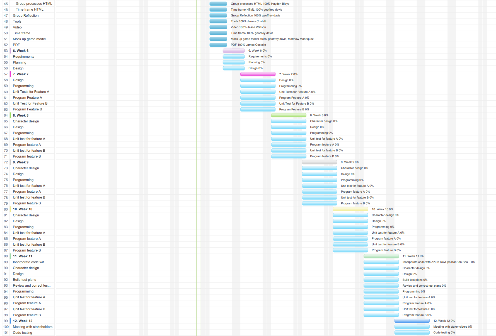

Projects weather they are big or small will always need structure and planning to guide the team members in the right direction. Plans and schedules are created not just for the team but for the stakeholders and owners of the project, providing them with estimated cost and timeframes which intern scopes out the project. Projects can be planned out in many different ways, generally in the IT industry projects are usually planned out with things like Kanban boards as shown in the example below.
Like all projects ToDoTopia was planned out using a tool called Project Manager, A useful and simple tool that allows all corresponding data to be inputted to a simple and easy to read graph like system. Below is ToDoTopias project plan which has been laid out over a period of 16 weeks, the first 5 weeks of the project are scheduled based on our group assignment. From the 6th week onward the project plan is based around the creation of ToDoTopia itself. Team 13 has planned and structured the project starting with a basic skeleton and as the project and our team meetings progressed the plans were updated and structured accordingly. Below is ToDoTopias project plan.
 
